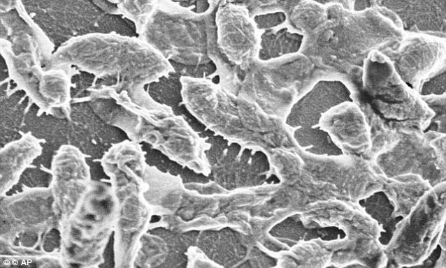

Animal Cruelty
Animal cruelty is when owners treat their pets horribly.
Disease
A condition of the living animal or plant body or of one of its parts that impairs normal functioning and is typically manifested by distinguishing signs and symptoms.
Violence
Violence committed with the use of a gun (firearm or small arm). Gun related violence may or may not be considered criminal. Criminal, includes homicide (except when and where ruled justifiable), assault with a deadly weapon, and suicide, or attempted suicide, depending on jurisdiction
Hunger
A desire for food a craving or ugrent need of a specific nutrient. an uneasy sensation occasioned by the lack of food a weakened condition brought about by prolonged lack of food.
Pollution

Contamination with man-made waste.